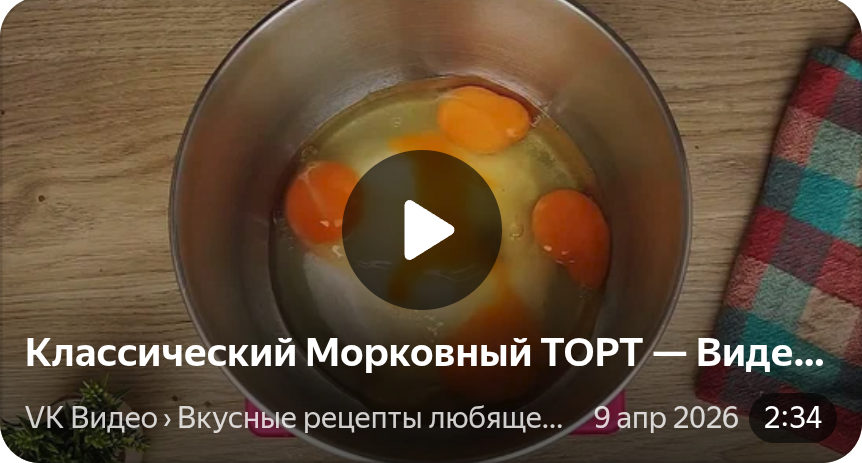

Яйца достаньте из холодильника за час до начала готовки — они должны быть комнатной температуры. Морковь очистите и измельчите на мелкой тёрке
или в блендере до состояния мелкой крошки (не пюре!). Если морковь слишком сочная, слегка отожмите лишнюю жидкость. Грецкие орехи подсушите на
сухой сковороде или в духовке при 160 °C около 5 минут, затем нарубите ножом до крупной крошки.
В глубокой миске взбейте яйца с сахаром до пышной светлой массы. Не прекращая взбивать, тонкой струйкой влейте растительное масло. Добавьте
натёртую морковь и аккуратно перемешайте лопаткой.
В отдельной миске смешайте сухие ингредиенты: муку, разрыхлитель, корицу, мускатный орех и соль. Просейте их в миску с яично-морковной смесью
и вмешайте лопаткой движениями снизу вверх. Добавьте рубленые орехи и цедру апельсина, ещё раз аккуратно перемешайте.
Вылейте всё тесто в форму и выпекайте 45–50 минут до сухой зубочистки. Есть два варианта: либо выпекать всё тесто сразу, а после остывания
разрезать корж на 2–3 части, либо разделить тесто на 2–3 части и выпекать каждый корж отдельно по 20–25 минут.
Не открывайте духовку первые 30 минут выпечки! Проверяйте готовность зубочисткой: она должна выходить сухой. Дайте коржам полностью остыть в
форме около 15 минут, затем аккуратно извлеките и остудите на решётке до комнатной температуры. Для лучшего результата заверните остывшие коржи
в пищевую плёнку и оставьте на ночь в холодильнике — они станут более влажными и ароматными.
Для крема взбейте размягчённое сливочное масло миксером на средней скорости до пышной массы (примерно 2–3 минуты). Добавьте сливочный сыр и
продолжайте взбивать до однородности. В конце добавьте ванильный экстракт и взбейте ещё раз.
